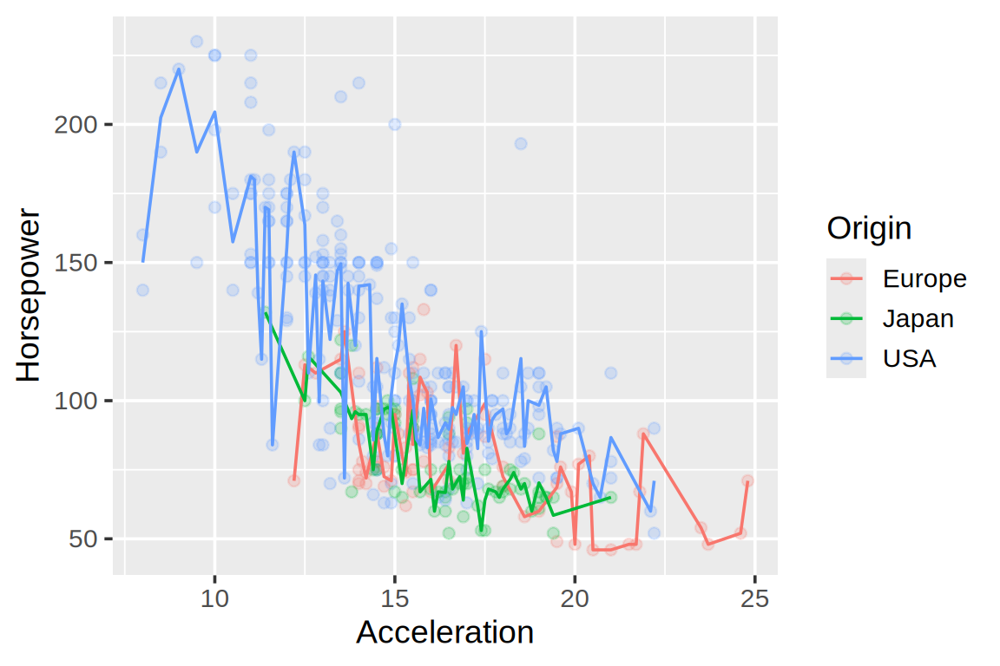
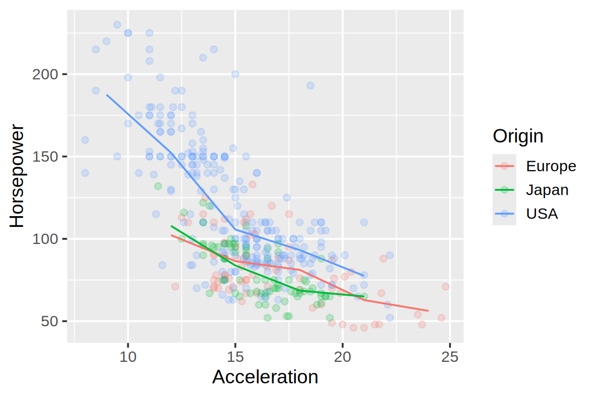
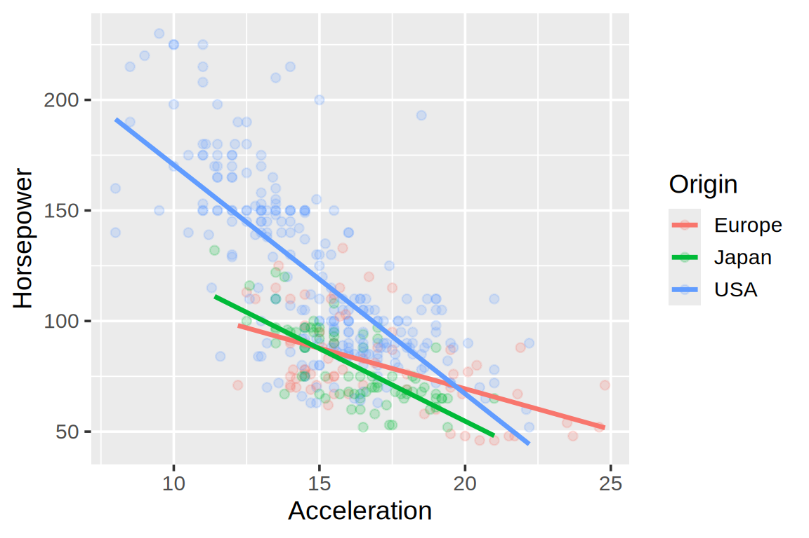
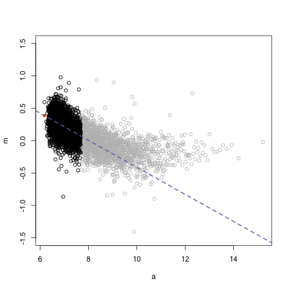
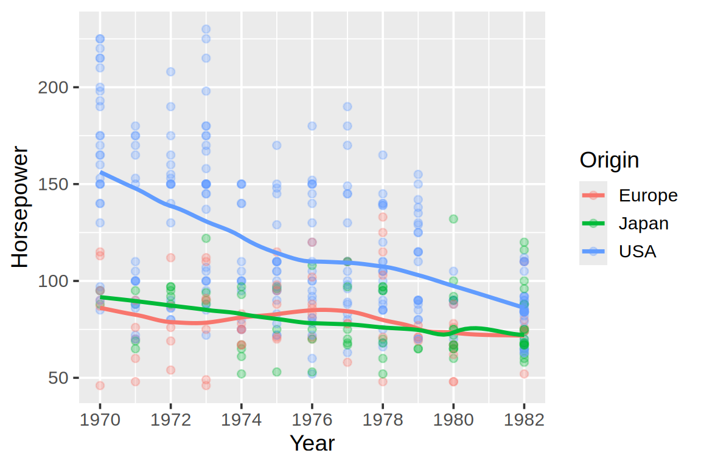
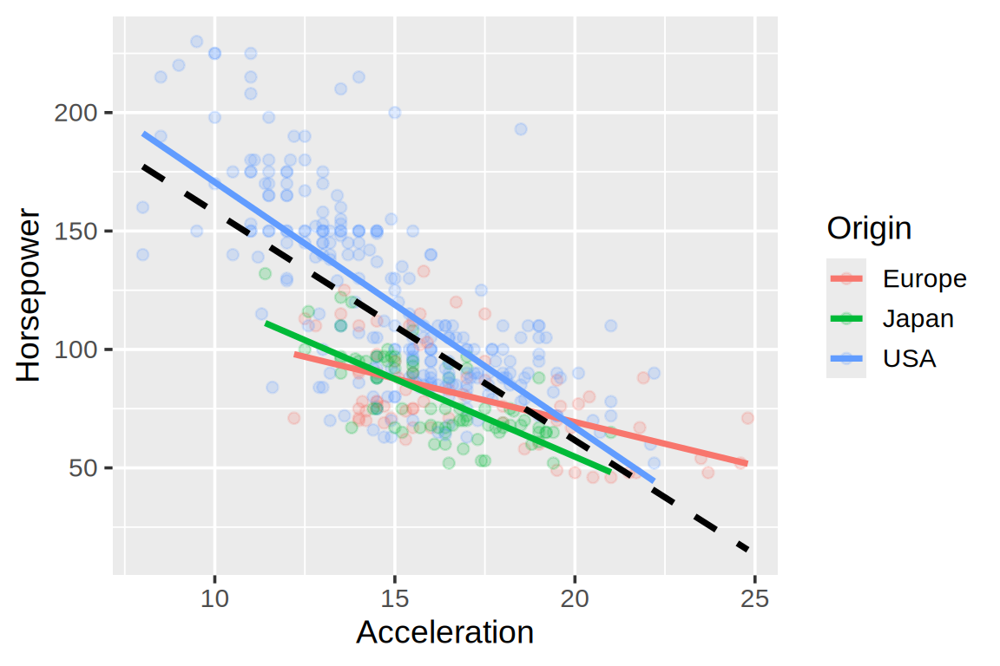

Use means and rolling means to summarize patterns while retaining the observations as context.
Distinguish global regression models from local smoothing, and choose a trendline according to the question and audience.
Adjust smoothing neighborhoods and explain how they affect the local detail shown by a curve.
Recognize that describing a trend within the observed data does not justify extrapolating it beyond that range.
16.1 Why bother?
In Connections, lines connected observations to show relationships and changes. Here we use lines to summarize a pattern rather than connect every observation. A trendline can make a general pattern easier to see when individual observations or multiple groups obscure it. Trendlines are also called fitted lines or lines of best fit. The choice of line determines which features of the data are emphasized. Here we focus on the summaries themselves and keep the observations visible. In Uncertainty, we add intervals and distinguish the spread of observations from uncertainty in an estimated mean.
We use automobile specifications from the Vega datasets collection, with missing acceleration or horsepower observations omitted. Acceleration records the time in seconds to accelerate from 0 to 60 mph: a larger value means the car takes longer to reach that speed. We first examine how horsepower varies with acceleration time across all cars, using one trendline. Near the end of the chapter, we compare this pooled relationship with separate fits by origin.
The four panels below show the same cars on the same axis scales, but summarize the relationship in different ways. Before learning how to construct the lines, consider what each might be estimating.
Think about whether the prediction is constant, changes at a constant rate, or changes its behavior across the x-axis.
Keep your proposed explanations in mind as you work through the chapter. We will revisit the same figure and identify the four methods in Section 16.4.
Averaging at each exact value
A simple summary is the mean horsepower at each acceleration time.Some acceleration times occur repeatedly, but others have very few observations, resulting in a noisy appearance of the line with many spikes that makes it hard to see the overall trend
car_points +geom_line(stat ='summary', fun ='mean')

Each mean is calculated separately from the observations at that acceleration time. Connecting the estimates helps us follow the pattern, but does not change the estimates or fit a shared model across the x-range.
Binned means
For a continuous x variable, we could instead divide its range into bins and calculate the mean response within each bin. A histogram uses these intervals to count observations; here we use them to average a response variable. The example below uses three-second acceleration intervals.
We use stat = 'summary_bin' to allow us to define a custom summary function with the bin instead of counting the observations.
car_points +geom_line(stat ='summary_bin', fun = mean, binwidth =3)

Binned means give a first view of the pattern, but depend on the width and placement of the bins. Bins can contain very different numbers of cars, and a single mean hides any pattern within its interval. Connecting these summaries adds interpolation between them, not a fitted model for the whole dataset.
We will now explore two ways to estimate the pattern more systematically: fit one model across the full range, or fit simple models within moving neighborhoods.
16.2 Fitting a global model
Another way to summarize the data is to fit one shared equation across the observed range. Here, a model is a rule that uses an input value to produce a predicted response. The simplest model returns the same prediction for every input. We will build up the flexibility of that equation in three steps:
One mean for all observations: give every car the same predicted horsepower.
Allow the line to tilt: let the prediction change with acceleration time.
Allow the relationship to curve: add a squared acceleration feature.
We use least-squares fitting throughout this progression. Unlike separate means at each acceleration time, a regression links estimates across acceleration times through shared coefficients. Changing observations in one part of the x-range can change fitted values throughout the range. This pooling can stabilize estimates, but it can also hide abrupt changes or impose an unsuitable shape; a shared model is not automatically better.
One mean for all observations
If we had to predict every car’s horsepower using the same value, which value would minimize the sum of squared errors? Unlike the earlier means at individual acceleration times or within bins, this estimate uses all cars to make one prediction shared by every observation.
The mean is the constant that minimizes the sum of squared deviations. In graphical terms, it is the best-fitting horizontal line under squared-error loss. Here \(i\) indexes cars, \(\hat{y}_i\) is predicted horsepower, and \(w_0\) is the fitted constant:
Can we improve the predictions by allowing them to depend on acceleration time? Linear least-squares regression fits a straight line by minimizing the sum of squared vertical deviations from the observations to the line.Linear regression allows that line to tilt by estimating a slope in addition to the intercept. The horizontal mean line is a special case where the slope is constrained to zero. For the straight-line fit, we estimate
\[
\hat{y}_i = w_0 + x_{i1}w_1
\]
where \(i\) indexes cars, \(x_{i1}\) is car \(i\)’s acceleration time in seconds, and \(\hat{y}_i\) is its predicted mean horsepower. The fitted weights \(w_0\) and \(w_1\) are the intercept and slope. The first subscript in \(x_{i1}\) identifies the observation; the second identifies the feature.
Set the smoothing method to lm for a linear model. se = FALSE hides ggplot’s default confidence band, which we will instead talk about in Uncertainty.
car_points +geom_smooth(method ='lm', se =FALSE)

Tilt the line around the sample means
For ordinary least squares with an intercept, the fitted line passes through the point \((\bar{x}, \bar{y})\): mean acceleration time and mean horsepower. For any chosen slope \(w_1\), the least-squares intercept is \(w_0 = \bar{y} - w_1\bar{x}\). We can therefore think of moving from the constant model to a straight line as tilting the line around this fixed point. The intercept changes with the slope; the pivot is the sample means, not necessarily the visual midpoint of the x-axis.
Use the slider below to change the slope. Start at zero to see the global mean line, then try negative and positive slopes. Watch how the equation changes while the line continues to pass through the diamond.
The slider explores candidate slopes, with the intercept adjusted for each one. They all pass through the sample means, but they do not fit the observations equally well. OLS chooses the slope that minimizes the sum of squared vertical residuals. The fixed axis limits make the change in tilt visible without rescaling the chart.
Deep-diveDeep dive: Which is the “best” line?
To be able to quantify how well a model “fits” the data, we need to quantify some type of metric that indicates how good the fit is. A common way of doing this is to use the distance from each observation to the model’s prediction for an observation at that location. For each observation, the prediction error —also called a residual when comparing observed and fitted values— is the observed value (the point) minus the predicted value (the line). In the chart below, the orange segments show the magnitudes (i.e. the absolute value) of these discrepancies.
There are different ways to combine these residuals into an overall error. An intuitive one might be to simply sum up all the magnitudes of the prediction errors, i.e. add the length orange lines together. This is a perfectly reasonable thing to do, but often the squared distance is used instead. Squaring gives large misses disproportionately more influence than taking the absolute distance (just like the mean vs the median). Squared error therefore encourages the model to avoid large misses, even if this means accepting several smaller ones. It also targets the mean (i.e. the mean is the best fit of all possible horizontal lines) and makes linear regression particularly convenient to fit using linear algebra since optimizing the squared error instead of the absolute error is more computationally efficient. Absolute error remains a valid alternative which targets the median and gives extreme residuals less influence. The choice should reflect what we want to estimate and which kinds of prediction errors matter.
Fitting objective
Error displayed below
What large residuals contribute to the error
Least absolute deviations (LAD)
Mean absolute error (MAE): average of absolute residuals
A residual twice as large contributes twice as much
Ordinary least squares (OLS)
Mean squared error (MSE): average of squared residuals
A residual twice as large contributes four times as much
As you can see in the table, these error metrics are defined as averages, but we talked about sums of residuals above. Minimizing the sum or the mean of either kind of error gives the same fit for a fixed dataset: dividing by the number of observations only rescales the objective. Using means makes it easier to communicate how wrong the line is on average. To facilitate communication, we might also avoid MSE since results in really large numbers and squared units (e.g. squared horsepowers) and instead take the square root of the MSE, which is called the Root Mean Squared Error (notably similar to standard
As in the preceding example, the slider changes the slope while the intercept adjusts to keep the line passing through this sample’s means. The title shows the resulting equation, with MSE and MAE directly below it. This lets us compare the losses for the same candidate lines. However, note that a freely fitted LAD line need not pass through the sample means (or median), it could be shifted up or down (whereas the OLS line is guranteed to be rotated around the mean).
Start with slope zero: the horizontal line is at the sample mean. Then adjust the slope: can you find a line with smaller MSE? Does the same candidate slope also give the smallest MAE? Watch how one long orange segment can dominate MSE even when many other segments are short. The axes remain fixed; at steep slopes, parts of the line and residual segments are clipped to the plotting area, but both error values include the full residuals.
If we were free to move a horizontal line vertically, the height minimizing MSE would be the sample mean, and a height minimizing MAE would be a sample median. With both intercept and slope freely fitted, OLS targets a conditional mean relationship, while LAD, also called median regression, targets a conditional median relationship.
Allow the model to curve
What if one constant slope does not capture the pattern? Regression is not restricted to straight lines. For the degree-two polynomial below, we add a feature \(x_{i2} = x_{i1}^2\):
\[
\hat{y}_i = w_0 + x_{i1}w_1 + x_{i2}w_2
\]
The weight \(w_2\) on squared acceleration time allows the relationship to curve rather than have a constant slope. All three examples estimate their coefficients using all cars by minimizing the sum of squared vertical residuals. The quadratic fit is still a linear model in its weights \(w_0\), \(w_1\), and \(w_2\), even though its graph can be curved in the original feature space.
car_points +geom_smooth(method ='lm', formula = y ~poly(x, 2), se =FALSE)
16.3 Fitting local models
Sometimes one equation is a poor description of the whole dataset. Instead of fitting one model across the full range, we can fit simple models repeatedly to nearby observations. We will follow the same progression as before: start with a constant, then allow each local fit to tilt.
Binning uses fixed, non-overlapping neighborhoods.A rolling mean instead averages observations within overlapping neighborhoods that move along the axis.We can think of a rolling mean as local constant regression: at each target x-value, fit a horizontal line to nearby observations and retain its height as the estimate. The resulting curve can bend even though each individual fit is horizontal, because the observations contributing to the estimate change as the neighborhood moves.
Here we sort the individual cars by acceleration time and average neighboring observations across all origins. Each included car receives equal weight. Unlike fixed bins, the neighborhoods overlap; however, equal-weight windows can still produce jumps as observations enter or leave.
frame=[-30, 30] starts with the preceding 30 observations, the current observation, and the following 30 observations in acceleration-time order. At the endpoints, it uses the available observations. By default, Altair expands window boundaries to include ties in the sorting variable, so a window can include more than 61 cars when acceleration times repeat.
There is no built-in way to plot a rolling mean in ggplot, so instead we calculate the means before plotting. slider::slide_dbl() averages the preceding 30 rows, the current row, and the following 30 rows, using the available rows at the endpoints. Unlike Altair’s default, this uses strict row boundaries rather than expanding for ties, so the curves can differ where acceleration times repeat.
The width of 30 observations on either side is an illustrative starting point, not a generally optimal choice. Compare narrower and wider windows to see which features persist. A fixed observation count spans different ranges of acceleration times where cars are more or less densely represented. Repeated acceleration times can also receive different estimates as the row window moves, producing vertical segments when those estimates are connected at the same x-value.
Three window types answer different questions:
Expanding ([None, 0], the default in Altair): average everything up to the current position in the sort order. This estimates a cumulative level rather than a local trend.
Trailing (for example, [-30, 0]): use observations at or before the current position. Common in e.g. finance. With a chronological sort, this is useful for monitoring as observations arrive.
Centered ([-30, 30]): use observations on both sides to describe a local pattern. Common in e.g. statistics.
Allow each local fit to tilt
Local linear regression instead fits a line with a slope, then evaluates that line at the target x-value. Moving the neighborhood and repeating these fits produces the curve. LOESS (locally estimated scatterplot smoothing), also called LOWESS (locally weighted scatterplot smoothing), uses local fits with distance-based weights. Nearby observations receive more influence, and the local fits can be linear or quadratic. The animation builds up the red fitted curve from local fits.

A local regression curve is assembled by moving a fitting window across the observations. Animation by Rafael Irizarry, from Simply Statistics.
For computational efficiency, geom_smooth() automatically changes the method based on the number of data points. To ensure that we use LOESS, we therefore set it explicitly although it is the default for datasets up to 1000 observations per group. By default, ggplot fits quadratic regressions locally for each neighborhood.
car_points +geom_smooth(method ='loess', se =FALSE)

Deep-diveDeep dive: Choosing the smoothing neighborhood size
Setting
Altair
ggplot
Local fit
Linear
Quadratic
Neighborhood fraction
bandwidth=0.3
span=0.75
The examples start with each library’s defaults. Changing the neighborhood fraction does not by itself make the fits equivalent.
We can control the fraction of observations included in each neighborhood. Larger fractions usually give a smoother, more general curve. Note that even if we were to include all observations in each neighborhood, this would not generally be identical to a single global linear regression since all observations do not have the same weight.
The span parameter changes the fraction of observations in each neighborhood. By default, it is set as 0.75.
car_points +geom_smooth(method ='loess', span =0.3, se =FALSE,method.args =list(degree =1, family ='symmetric'))
The following animations illustrate the qualitative effect of narrower and wider weighting neighborhoods in a different LOWESS implementation. Its Gaussian-width parameter, \(\sigma\), is not the same parameter as Altair’s bandwidth or ggplot’s span.
A narrower weighting neighborhood follows more local variation. Source: .
A wider weighting neighborhood produces a smoother curve. Source: .
Deep-diveDeep dive: Kernels connect density estimation and local regression
In Smoothed distributions, kernels let observations contribute gradually to nearby locations rather than placing them entirely inside one fixed bin. The same distance-based weighting idea can be used to estimate a relationship.
At a target x-value, a rectangular kernel gives equal weight to observations inside a window and zero weight outside it. A Gaussian kernel gives the greatest weight to nearby observations, with smoothly decreasing weights at greater distances. Its weights are technically nonzero everywhere. The bandwidth controls the distance over which those weights decrease.
What we do with the weights determines what we estimate:
KDE: add the kernel contributions and normalize to estimate the density of x.
Local weighted mean: average the corresponding y-values, dividing by the sum of the weights.
Local linear regression: use the weights to fit a nearby line, then evaluate it at the target.
With rectangular weights, the local weighted mean is a moving-window average. With smoothly decreasing weights, it is often called a kernel smoother. A KDE needs only the x-values; regression also needs a response variable y. More observations near a location increase its estimated density, but do not by themselves increase its estimated mean response.
LOESS commonly uses tricube weights, which decrease with distance and reach zero at the edge of a nearest-neighbor neighborhood. Its span specifies a fraction of observations, whereas a KDE bandwidth commonly specifies a distance in the variable’s units. These settings therefore share an idea but are not directly interchangeable. Likewise, a rolling window of 61 rows is not a fixed interval of acceleration times when observations are unevenly spaced along the x-axis.
Ex-promptExercise 2
Suppose every car has exactly 100 horsepower, but many more cars have acceleration times near 15 seconds than near 10 or 20 seconds. Would a KDE of acceleration times and a local weighted mean of horsepower both have a peak near 15 seconds?
Ex-hintHint
One calculation estimates where the x-values are concentrated; the other averages the y-values associated with nearby x-values.
Ex-solutionSolution
The KDE can have a peak where acceleration times are densely represented, depending on its bandwidth. The local weighted mean remains 100 wherever the total weight is positive: its weighted sum is 100 times the sum of its weights, so dividing by that sum returns 100. The same kernels can therefore reveal a changing density and a constant response.
Why fit a local slope?
Near the left edge of an increasing trend, most available neighbors lie to the right. A rolling mean averages their higher responses and can overestimate the response at the target. A local linear fit can account for the slope and evaluate the line at the target instead For observations lying exactly on a straight line, it recovers that line wherever the neighborhood contains enough distinct, positively weighted x-values. A local mean can also reproduce a straight trend in a symmetric neighborhood, but generally not at the boundaries or when the x-values are unevenly spaced.
In our examples, the rolling mean and regression both use individual cars as observations, so densely represented acceleration ranges contribute more observations to their fits. The rolling mean uses a centered observation window with equal weight per included car (with boundary ties expanded in the Altair example); LOESS instead selects a fraction of nearby cars and weights them by distance. To isolate the effect of a local constant versus a local slope, we would need to use the same input observations, neighborhoods, and weights.
16.4 Compare the questions answered by different summaries
Return to the opening exercise. The same four panels now illustrate a progression from a global constant to a global line, and from a local constant to local regression. The top row uses all cars to fit one shared model; the bottom row uses moving neighborhoods.
Following more local variation is not automatically better: the useful summary depends on the question and on which features persist across reasonable modeling choices.
Panel and summary
Observations used
What is fitted?
A: Overall mean
All cars
One shared constant
B: Global linear regression
All cars
One shared straight line
C: Rolling mean
Moving, overlapping window
A local constant
D: Local smoothing regression (LOESS)
Nearby cars, weighted by distance
A local line at each target
For this comparison, the rolling mean uses 30 observations on either side, with the boundary-tie handling described earlier for each library. Both LOESS examples use a neighborhood fraction of 0.5; the R fit explicitly uses local linear, robust fitting to more closely match Altair. The implementations can still give slightly different curves.
Trend estimators differ in which observations they use, how they weight them, and how flexible a function they fit.
16.5 When to choose which trendline?
Means and rolling means are useful when the summarized values should have a straightforward interpretation. It is poorly suited to extrapolation beyond the data range but can be particularly accessible to a general audience.
Regression models are useful when a simple equation is a reasonable description of the relationship and it is advantageous to describe the relationship with a known equation. Predictions beyond the observed range are generally more accurate than for models fitted using a local neighborhood, but they still rely on that the fitted equation hold beyong the observed range, and become more uncertain as they move further from the data.
LOESS is useful for describing patterns within the observed data without choosing one global equation. It often resembles the trend a reader would sketch by eye, and it generally usable for communication purposes although they are not as straightforward to understand as a rolling mean. It is poorly suited to extrapolation beyond the data range.
16.6 Extension: comparing trends within groups
So far, each trend has summarized all cars together. The pooled fit describes the overall relationship between acceleration time and horsepower.Separate fits by origin ask whether that relationship also describes the cars within each group. As in Groups, the overall pattern can reflect both differences within groups and differences between groups.
In the following comparison, the colored lines are separate linear regressions for each origin, and the dashed black line is the pooled regression from earlier. Using the same fitting method lets us focus on the effect of grouping.
ggplot(cars, aes(x = Acceleration, y = Horsepower, color = Origin)) +geom_point(alpha =0.2) +geom_smooth(method ='lm', se =FALSE) +geom_smooth(aes(group =1), method ='lm', se =FALSE,color ='black', linetype ='dashed')

The pooled line need not coincide with any group’s line. Ask whether the groups occupy different parts of the x-range and whether their slopes or fitted levels differ. The pooled and grouped fits answer different questions; choose according to the comparison you want to make, rather than automatically adding groups to every trend plot.